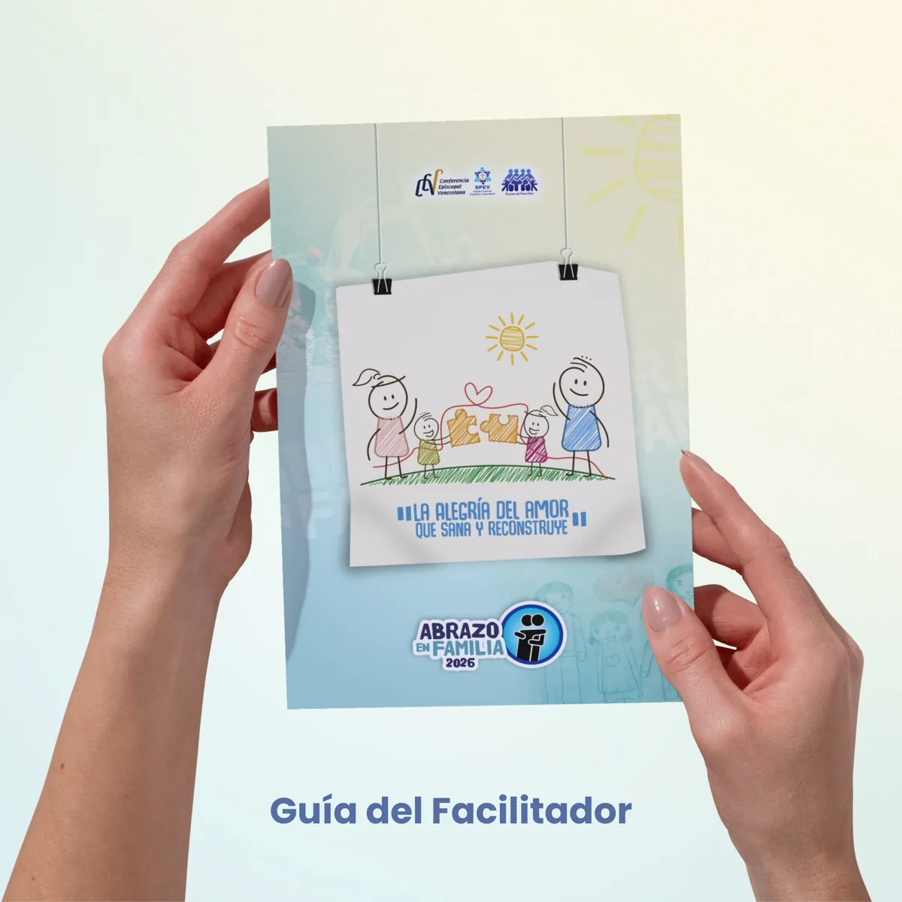
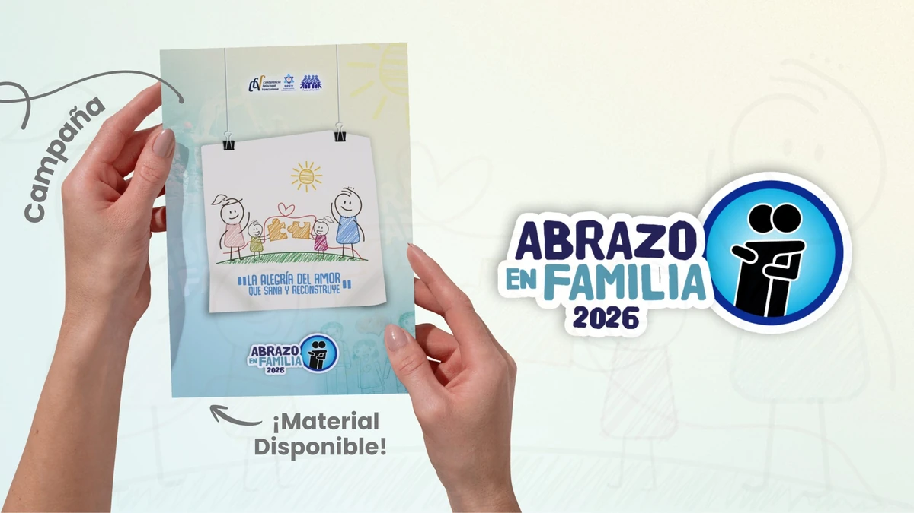

Recursos
Guías y descargas
Materiales del Centro de Laicos, Familia y Juventud que puede descargar. Los pesos son los de los archivos en el sitio donde están alojados. Para reutilizar o adaptar estos materiales, consulte antes al Centro.

Guía del Facilitador 2026 PDF · 18,8 MB
Guía de la campaña Abrazo en Familia 2026 para quienes acompañan a los equipos parroquiales de pastoral familiar.Descargar Hoja del Niño 2026 PDF · 5,8 MB
Hoja del Niño 2026 PDF · 5,8 MB
Hoja de la campaña Abrazo en Familia 2026 dirigida a los niños.Descargar Afiche de la campaña 2026 PDF · 6,8 MB
Afiche de la campaña 2026 PDF · 6,8 MB
Afiche de Abrazo en Familia 2026. También hay una imagen JPG de 25 KB para verlo sin descargar el PDF.Descargar
Plantilla de presentación de la campaña PPTX · 2,4 MB
Plantilla de diapositivas para presentar la campaña Abrazo en Familia 2026.Descargar Guía del Facilitador 2025 PDF · 32,6 MB
Guía del Facilitador 2025 PDF · 32,6 MB
Guía de la campaña Abrazo en Familia 2025, alojada en el sitio de la Conferencia Episcopal Venezolana.Descargar Manual «Organizar es participar» PDF · 7,2 MB
Manual «Organizar es participar» PDF · 7,2 MB
Manual del Área de Juventud del Centro.Descargar
Para ver el afiche de 2026 sin descargar el PDF: ver la imagen (JPG, 25 KB).

Los materiales de terceros mantienen los derechos de sus titulares.